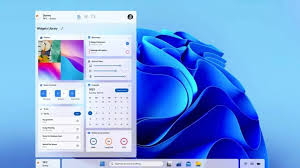

Windows 12: Kolejny krok w stronę inwigilacji? Sprawdzamy, co szykuje Microsoft
Kategoria: Poradniki | Data: 3 stycznia 2026

Mimo że świat technologii huczy od plotek o premierze Windows 12, dla wielu użytkowników nowa wersja systemu to nie powód do radości, a kolejne ostrzeżenie. Microsoft planuje jeszcze głębszą integrację ze sztuczną inteligencją i systemami śledzenia, co budzi uzasadniony opór. W tym artykule przyglądamy się faktom dotyczącym premiery 'Dwunastki' i wyjaśniamy, dlaczego warto już teraz rozważyć alternatywy, które szanują Twoją prywatność.